Mêmes règles que le n°44, le lot 1, le lot 2 et le lot 3 que tu as validés : source PNG native, aucun agrandissement, retouche à la résolution de la source, vert ramené dans la famille du n°260, puis WebP animé 660 px (+ GIF de secours). Rien n'est intégré : aucun GIF livré remplacé, APK intact, 0 image générée.
Vert attendu sur les ischio-jambiers. Planche 1376×768, deux cases → export 573×660 (GIF livré 382×440, 192 ko). Recalage sûr : 5,14/255.
WebP animé 660 q90 — n°131 94 ko · 573×660 · 2 phases de 500 ms GIF de secours 389 ko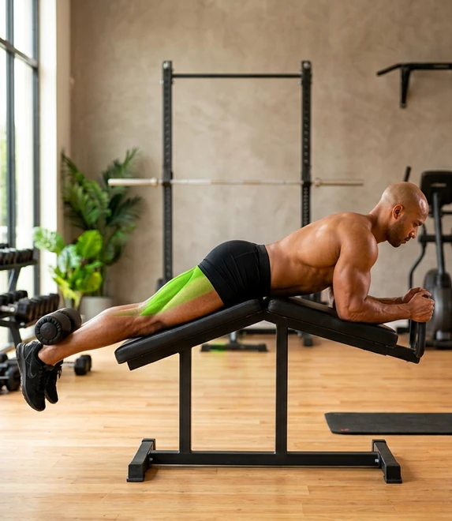
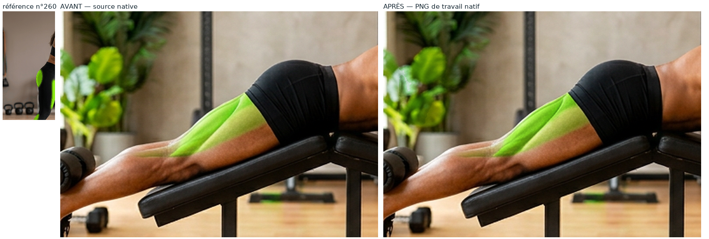
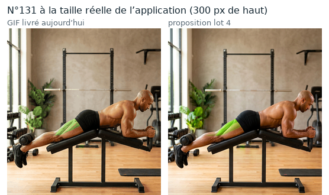
Variante du 131 (même geste, pieds fléchis) : à regarder comme une paire. Export 579×660 (GIF livré 386×440, 197 ko). Meilleur recalage du lot : 5,02/255.
WebP animé 660 q90 — n°133 92 ko · 579×660 · 2 phases GIF de secours 405 ko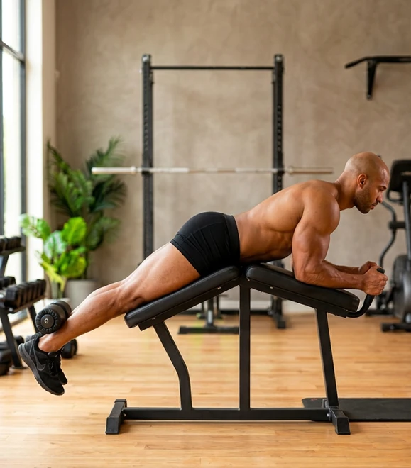
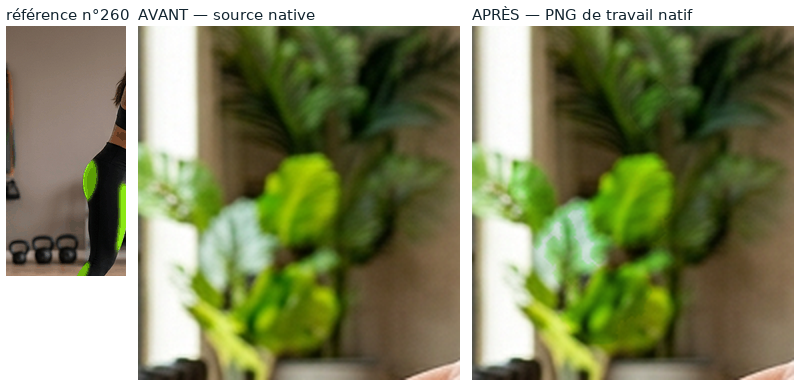
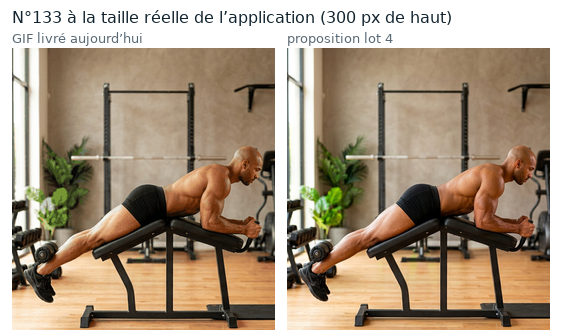
Point à trancher : la phase 2 reste à 0,828 de saturation (contre 0,914 pour la référence 260) parce que j'ai conservé l'ombrage entre les phases, comme tu l'as validé sur le n°14. Dis-moi si tu veux la remonter.
Zone verte la plus petite du lot (3 685 et 3 595 px) : c'est le numéro où un débordement se verrait le plus. Export 588×660 (GIF livré 392×440, 189 ko).
WebP animé 660 q90 — n°114 87 ko · 588×660 · 2 phases GIF de secours 381 ko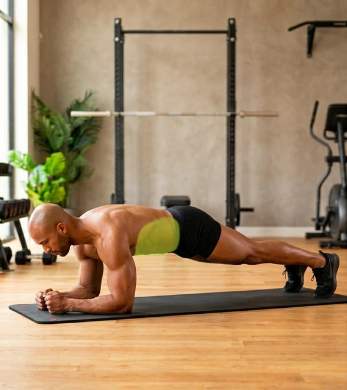
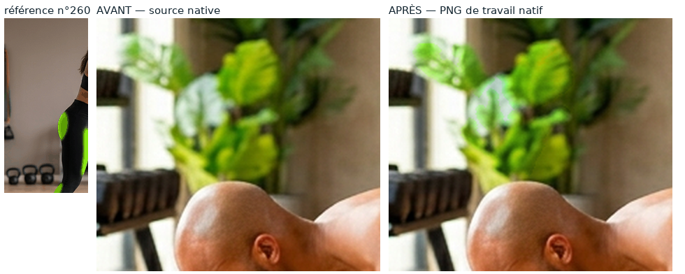
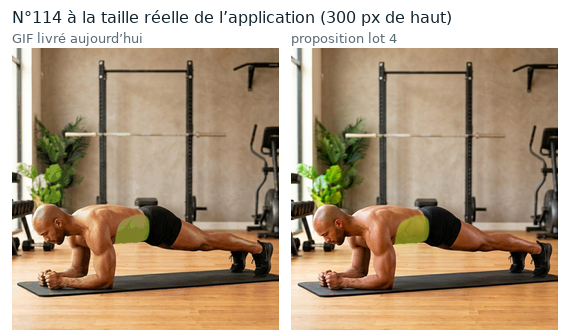
Seul numéro « femme » du lot, et la zone verte la plus étendue (3 766 et 3 831 px). Export 585×660 (GIF livré 390×440, 183 ko). C'est aussi le WebP le plus léger du lot : 64 ko.
WebP animé 660 q90 — n°23 64 ko · 585×660 · 2 phases GIF de secours 375 ko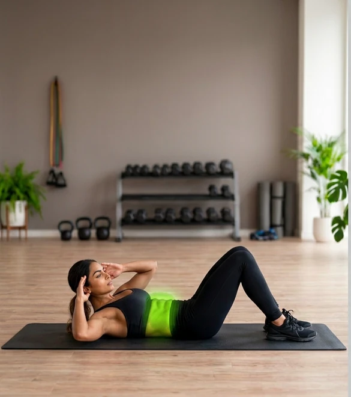
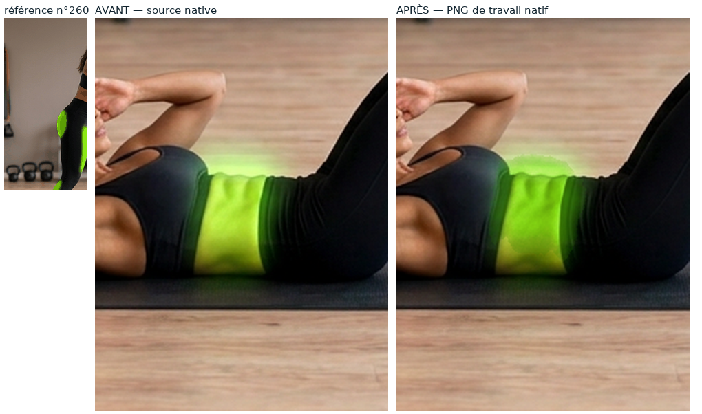
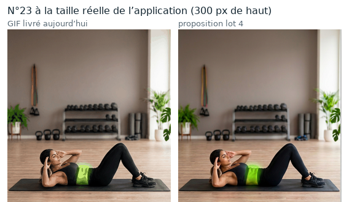
Point à trancher : la transition de contour mesure 9,78 et 11,82 px, contre 3 à 6 px sur les trois autres numéros : le bord du vert y est nettement plus doux. C'est le numéro où j'attends le plus ton œil.
Ces planches montrent ce que contient réellement le WebP et le GIF de repli (fichiers rouverts image par image), pas le PNG de travail.
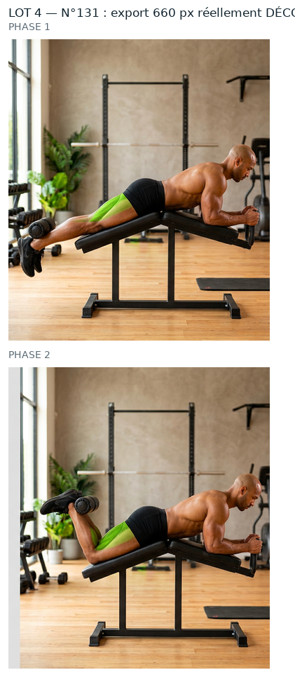
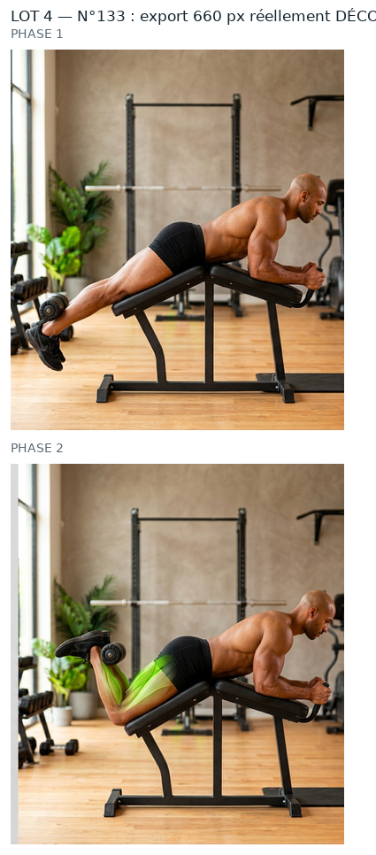
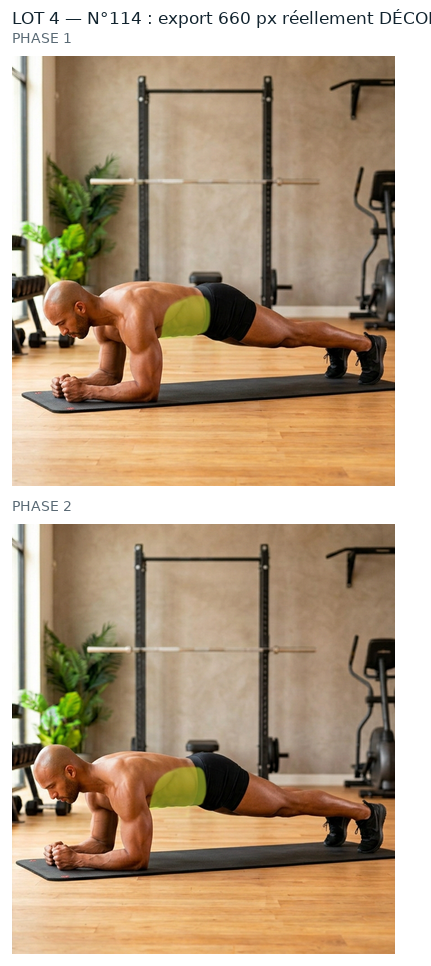
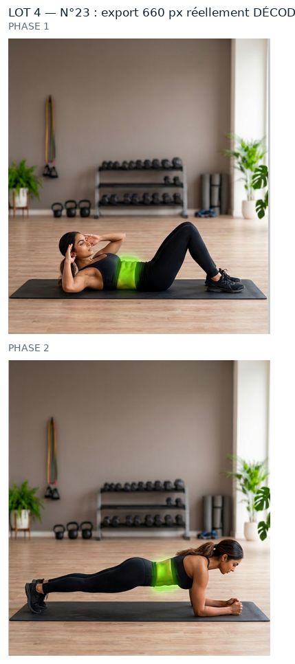
lot4/CONTROLES.json, mais à confirmer visuellement.ROI, seuils, percentiles, poids, PSNR et garantie « aucun pixel modifié hors zone » :
evolution/media/refonte-photo/hd-2026-09-30/lot4/CONTROLES.json —
0 pixel modifié hors zone sur les 8 phases du lot.